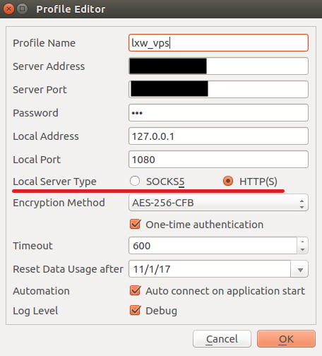
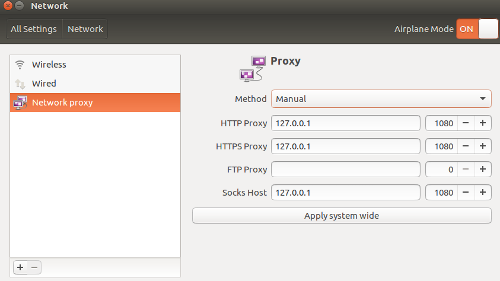
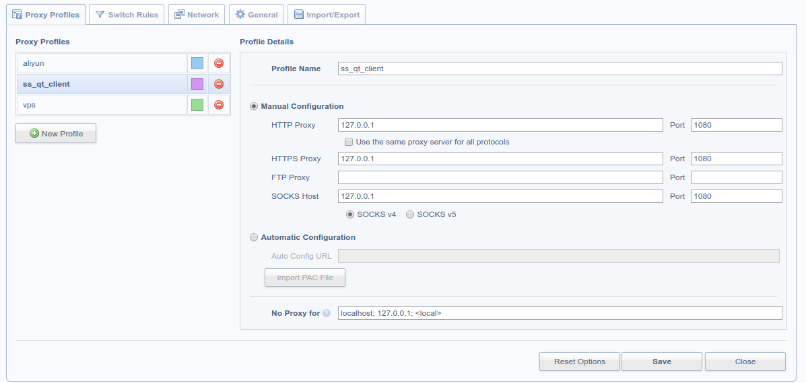

Shadowsocks-服务器&客户端配置
服务器配置
1.使购买境外服务器, 这里选用的是VIRMACH 因为穷,所以买便宜的.
2.登录服务器并更改密码: ssh@ip
3.配置服务端:1
2
3
4
5$ wget --no-check-certificate https://raw.githubusercontent.com/teddysun/shadowsocks_install/master/shadowsocks.sh
$ chmod +x shadowsocks.sh
$ ./shadowsocks.sh 2>&1 | tee shadowsocks.log # 配置密码、协议等（建议选择7：aes-256-cfb）
$ vim /etc/shadowsocks.json # "server"为服务器ip
$ ssserver -c /etc/shadowsocks.json -d restart # 重启服务
客户端配置
使用shadowsocks/shadowsocks-windows在Windows的配置Shadowsocks的客户端是很简单的，但在Ubuntu上只找到了shadowsocks/shadowsocks-qt5，感觉比shadowsocks/shadowsocks-windows稍微麻烦一点(shadowsocks-qt5的优势是跨平台)。这里对如何在Ubuntu和优麒麟中配置Shadowsocks-Qt5客户端做个简单的总结。
Ubuntu16.04上的安装和使用
按照shadowsocks-qt5安装指南的操作安装shadowsocks-qt5客户端：1
2
3sudo add-apt-repository ppa:hzwhuang/ss-qt5
sudo apt-get update
sudo apt-get install shadowsocks-qt5
按下super键（windows键）搜索shadowsocks应用，并执行。
优麒麟16.10上的安装和使用
在同学的Ubuntu优麒麟上尝试上面的方法，在sudo add-apt-repositorG ppa:hzwhuang/ss-qt5这一步就会出现问题。
可以尝试修复上面的问题（应该是需要手动编译shadowsocks包），或者使用下面的方法（参考自shadowsocks-qt5 Installation）1
2chmod a+x Shadowsocks-Qt5-x86_64.AppImage
./Shadowsocks-Qt5-x86_64.AppImage
在shadowsocks中配置相应的服务器、端口、密码、加密方式（可以参考下图的配置）后，选择”连接（Connect）”，此时打开https://www.google.com/或http://www.youtube.com/进行测试，此时应该是无法打开这些网站的。

还需要配置本地的代理，有两种方法（参考自不支持Ubuntu17.04）：
- 【不推荐】在Ubuntu系统中打开System Settings->Netowork->Network proxy, 选择Manual, 参考下图的配置进行修改后，选择Apply system wide。此时再打开https://www.google.com/或http://www.youtube.com/就可以上网了。
 - 【推荐】第二种方法是使用浏览器的插件，这里以Chrome/Chromium的Switchysharp插件为例进行说明（可以参考下图的配置，其实和方法1中的设置是一样的）。

这样在需要科学上网时，只需要切换到相应的代理模式即可。
其他客户端配置
- Iphone: 去加拿大的applestore下载wingy。(配置ip、协议、密码)
- Android: https://github.com/shadowsocks/shadowsocks-android/releases/download/v4.2.5/shadowsocks-nightly-4.2.5.apk (配置ip、协议、密码)